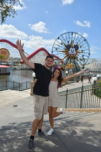

My name is Cintiha Rosas-Gordillo. I am currently enrolled at Portland State University
pursuing a Bachelor of Science.I will be graduating in Spring of 2020
with a Computer Science Major and a Business Administration Minor.
I currently work as a Technical Course Support Specialist for Karla Fant and Mark Morrissey.
My roles include teaching undergradyate students C++, C and Java topics, as well as
helping students code/debug in a concurrent enviroment. Outside of school, I love going to Disneyland.
After my high school graduation, I was lucky enough to get annual passes for Disney, so I make it a
point to visit atleast once a month.
